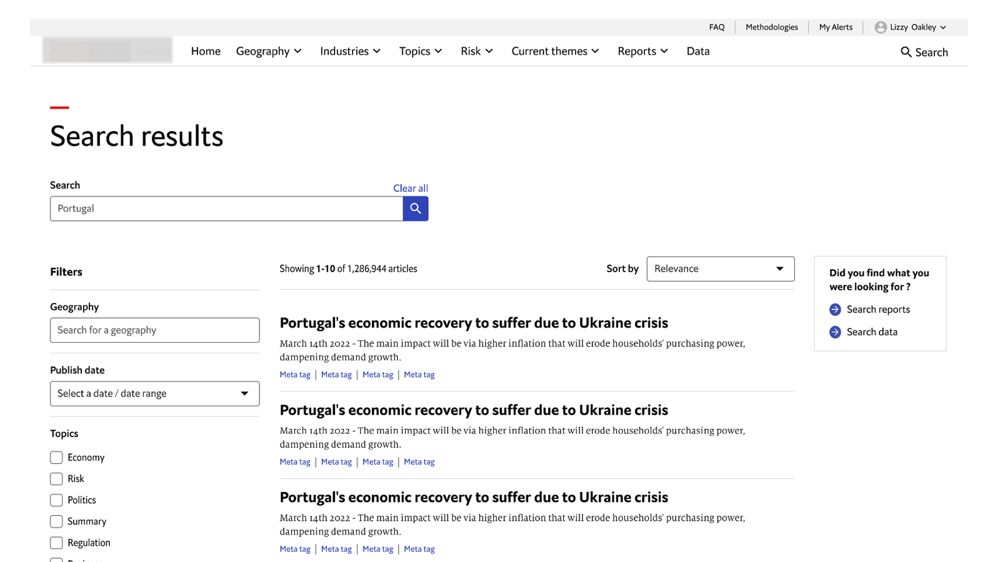
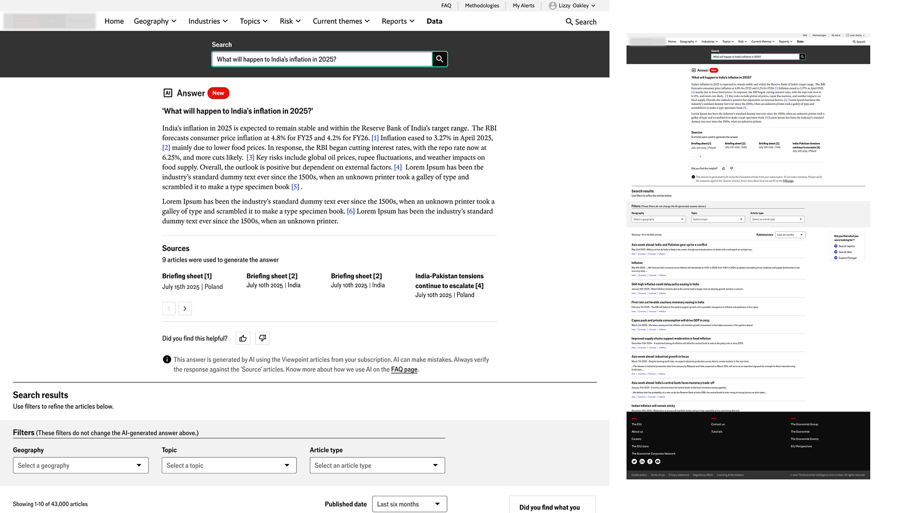
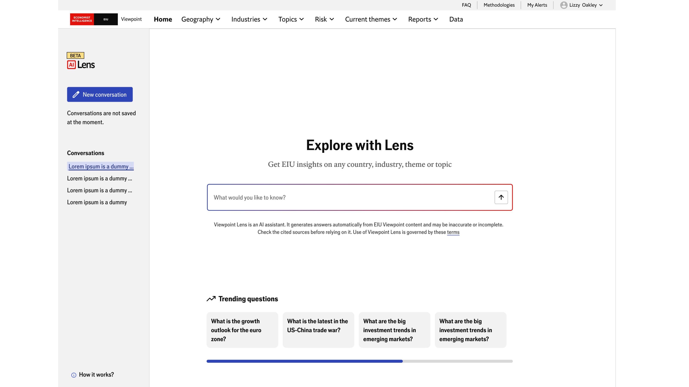

A leading B2B intelligence platform · 2023–2026
From broken keyword search to a multi-turn AI decision co-pilot — a three-stage evolution
A three-stage evolution I led end-to-end starting with analytics that showed a critical feature was failing at scale, building the data case for semantic AI, and designing an iterative decision companion for a global expert audience. This is the story of how platform data shaped every design decision, and how I turned a failing product feature into a strategic differentiator.
The brief
A broken experience at the most critical moment in the user journey
Stakes and business context
The platform serves economists, risk analysts, and policy strategists at 930+ organisations across 60+ countries. These are expert users under time pressure. Search was their primary way of reaching high-value intelligence — and it was failing more than half the time.
The numbers told a clear story: 57% of searches failed to surface relevant content, 33% of users dropped off entirely at the search step, and 84% relied on the keyword bar alone because the filter system was too confusing to use. A feature accounting for more than 10% of all sessions was actively damaging the platform's core value proposition.
The business risk was compounded by the audience. When an economist at a central bank or a risk director at a Fortune 500 hits three dead ends in search, they don't submit a support ticket — they close the tab and question the subscription renewal.
My diagnosis went beyond the surface symptoms. The root problem was architectural: users thought in questions, concepts, and intent — but the system retrieved through exact terms, tags, and keywords. No amount of UI refinement could bridge that gap.
This framing shaped the three-stage strategy: first stabilise the existing system while building the evidence base, then replace the retrieval model entirely, then extend it into a reasoning companion that mirrors how expert users actually think.
Each stage had to earn the next — delivering visible improvement at each step rather than asking for a multi-year blank cheque. The sequencing was both technically incremental and commercially justifiable.
My role
End-to-end ownership across three stages and four years
What I led and how
Strategy & sequencing
Defining the roadmap
- Diagnosed the structural mismatch between user intent and system retrieval
- Defined the evolution strategy and the rationale for each transition point
- Secured stakeholder alignment across product, engineering, editorial, and senior leadership at each stage
- Advocated for measured, responsible AI adoption — grounding each stage in user evidence before escalating complexity
Research & discovery
Understanding expert users at scale
- Conducted user interviews and usability testing with analysts, economists, and policy researchers across geographies
- Introduced synthetic user research methods — using AI to simulate expert personas and accelerate hypothesis testing
- Partnered with data analytics to connect quantitative signals to qualitative insights
- Defined the 7% semantic search engagement baseline as the north star metric for co-pilot success
Design & delivery
Shipping across three product cycles
- End-to-end UX across all three stages — IA, interaction design, prototyping, and handoff
- Maintained design fidelity through agile delivery — embedded in the squad through engineering and launch
- Designed for transparency and user control at every AI touchpoint — attribution, source visibility, explicit reasoning
- Mentored junior designers contributing to the search workstream
Stage 01 · 2023
Stabilise the foundation
Optimising keyword search — and proving it wasn't enough
The diagnosis
What was actually broken
- Relevance ranking was surfacing outdated or tangential content at the top of results
- Filter labels used internal taxonomy that didn't match how users described their research needs
- No snippet previews — users had to open articles to assess relevance, multiplying friction
- No synonym handling — "growth" and "GDP expansion" returned entirely different results
The design decisions
What I changed and why
- Refined ranking logic to weight recency and relevance signals more accurately
- Rewrote filter labels using language surfaced directly from user interview transcripts
- Introduced article snippets across all results — reducing the need to click-and-back
- Built a synonym dictionary seeded from search query logs to handle natural language variation
The outcome
What changed — and what didn't
- Marginal improvement in filter usage once terminology aligned with user language
- Reduced irrelevant results for known, structured queries
- Drop-off remained at 33% — confirming the problem was structural, not cosmetic
- Produced the evidence needed to make the case for semantic search I used these numbers directly in the stakeholder presentation, not as background context but as the central argument
"Optimising a keyword system for users who think in questions is like giving someone a better map of the wrong city. The destination was never the problem — the retrieval model was."

Stage 1 — Optimised keyword search with improved ranking, relabelled filters, and article snippets
Stage 02 · 2024
Replace the retrieval model
From keyword matching to semantic understanding
The diagnosis
Why the model had to change
- Expert users search with intent — "what's driving political risk in Southeast Asia?" — not keywords like "Southeast Asia political"
- Question-based queries returned near-zero relevant results under the keyword model
- Users were breaking questions into fragments and manually scanning results — adding cognitive load the platform should be removing
- The platform's analytical depth was invisible at the surface; users couldn't reach the insight layer
The design decisions
What I introduced and why
- Semantic search — understanding intent and conceptual meaning, not just term frequency
- AI-generated answer summaries surfaced at the top of results — reducing time-to-insight dramatically
- Redesigned the search input to visually encourage questions, not single-word entries
- Summaries as entry points, never replacements — all source articles remained visible and attributed
- Explicit AI attribution on every generated response — users always know what is AI-generated vs. editorial
The outcome
Impact and the new baseline
- Question-based queries now resolved accurately — the primary failure mode of Stage 01 eliminated
- Faster time-to-insight: users reached the answer layer without scanning multiple articles
- Analytics showed 7% monthly active user engagement consistently across months — a measured baseline, not an estimate, which became the design brief for Stage 03
- New pattern emerged: users wanted to continue the conversation — semantic search couldn't handle follow-ups across turns

Stage 2 — Semantic search: natural language query, AI-generated answer summary, cited source articles
Stage 03 · 2026 Launching
Extend into reasoning
From answering questions to supporting decision journeys
The diagnosis
What semantic search revealed
- Users' questions evolved as they learned — each answer raised more specific follow-up questions
- Context was lost between searches, forcing users to restate intent every time
- Expert decisions are iterative — analysts compare scenarios and build a picture over time, not via single queries
- The 7% baseline showed most users still weren't reaching the deepest value layer of the platform
The design decisions
How I designed for expert reasoning
- Multi-turn model — the co-pilot retains full context across a session, building on previous responses
- Proactive follow-up suggestions — surface the next logical question, reducing cognitive load between turns
- All responses grounded in source content with visible attribution — users see what evidence supports each answer
- Explicit reasoning trails — the co-pilot shows its working so expert users can interrogate and validate
- User control preserved throughout — the co-pilot supports reasoning, it does not conclude on behalf of the user
The north star
How Stage 03 success is measured
- North star: exceed the 7% monthly active engagement established by semantic search
- Secondary signals: session depth (turns per session), return rate, follow-up query volume
- Stage 03 is live and in active measurement — tracked against the semantic search baseline
- Early signals show significantly deeper sessions than Stage 02 — multi-turn behaviour emerging as designed

Stage 3 — Multi-turn AI co-pilot: context-aware follow-up suggestions, source attribution, transparent reasoning
Outcomes
What changed — and what it took to get there
Impact across three stages
↑
Search success rate
Semantic search eliminated the primary failure mode — question-based queries now resolve accurately, directly addressing the 57% failure rate that defined the problem.
7%
Monthly engagement baseline set
Semantic search established consistent 7% monthly active user engagement — the measurable north star the co-pilot is now designed to exceed.
✦
Responsible AI adoption
Built a transparent, source-grounded AI experience trusted by expert audiences — attribution, user control, and explicit reasoning at every touchpoint across both AI stages.
The benchmark we're designed to beat
This number came from analytics, not assumption. Platform data showed AI-powered semantic search consistently engaging 7% of monthly users month on month — a measured baseline across multiple periods. It became the design brief for Stage 03: build something that breaks through that ceiling by removing the context friction that capped single-turn AI. That's the north star metric.
Reflection
What I'd do differently
I'd invest more in the transition between Stage 01 and Stage 02. We moved from diagnosis to semantic search without building enough shared understanding of the retrieval model change across the broader team. Engineers and editorial had legitimate questions about how AI-generated summaries would interact with editorial standards — and we answered those reactively rather than proactively.
The lesson: when the design intervention is a system-level change rather than a feature change, the alignment work needs to precede the design work, not run in parallel with it.
I'd also define the success metric at the start of each stage, not retrospectively. We defined the 7% north star for the co-pilot after semantic search had been live for months. Setting and publishing metrics at the outset of each stage would have created sharper focus and made the handoff between stages cleaner.
That said, the three-stage sequencing held up. Earning each stage through evidence rather than ambition meant every design decision was defensible, and stakeholder trust accumulated rather than eroded over the four-year arc.
NDA notice — The organisation name, platform name, and product feature names in this case study have been anonymised under a non-disclosure agreement. All metrics, strategic decisions, and design work described are accurate and drawn from direct personal involvement. Screenshots shown are property of the organisation and appear here for portfolio purposes only.